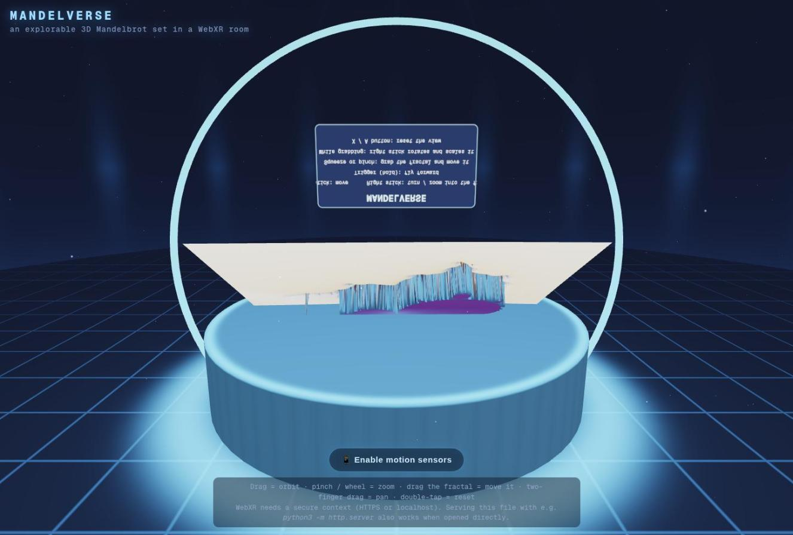
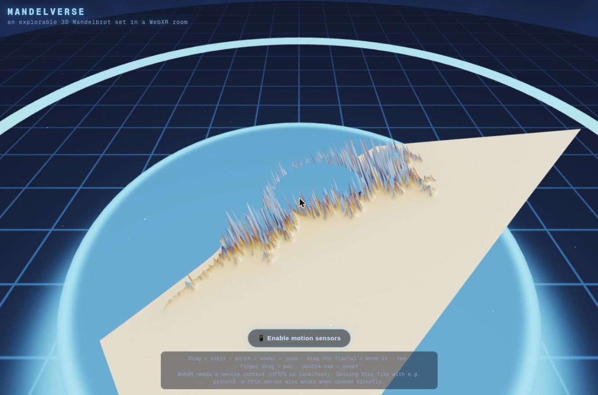
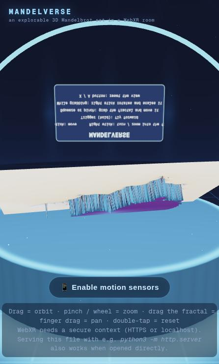
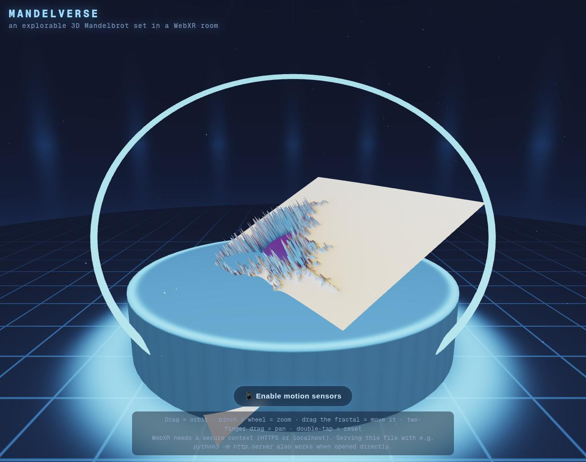
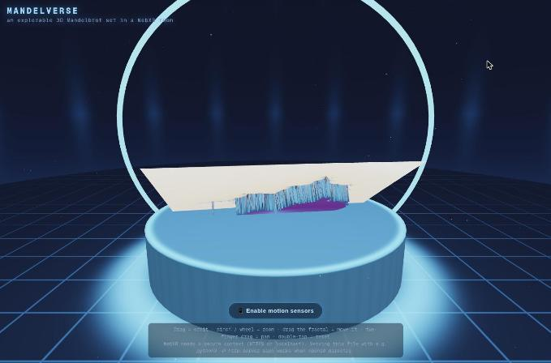
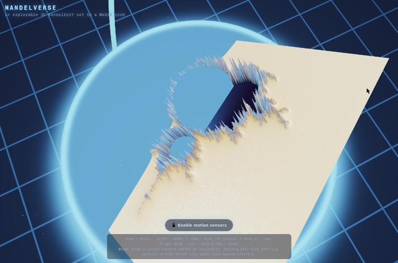

Candidate
Mistral Large 4 · v1
Standing 6 Mean rank 5.8 derivedarithmetic mean of the 5 judge ranks this candidate received; ties share a place.
Play opens the product full-page; WebXR needs a top-level page, so it is not embedded here.
Open on a device
Scan to open the product on a phone or headset browser. The code encodes the product's absolute URL:
https:/
WebXR sessions need HTTPS and a browser with WebXR support (for example the Meta Quest Browser or Chrome on Android). No headset session was entered during the experiment; see the caveats.
Results at a glance
| Judge | Rank |
|---|---|
| HTML | 6 / 8 |
| Transcript | 5 / 8 |
| HTML + Transcript | 6 / 8 |
| Browser | 6 / 8 |
| Browser + HTML | 6 / 8 |
| Mean rank derived | 5.8 |
| Spread derived | 5–6 · σ 0.40 |
| Review | Overall |
|---|---|
| HTML | 5 / 10 |
| Transcript | 7 / 10 |
| Browser | 5 / 10 |
| Mean score derived | 5.67 |
| Range derived | 5–7 |
Derived values: mean rank = arithmetic mean of the 5 judge ranks this candidate received; spread = lowest–highest rank and the population standard deviation σ of those ranks; mean score = arithmetic mean of the phase-1 overall scores; range = lowest–highest of them. A “–” means no rank or review exists.
Phase-1 criteria
Each review type had its own 6 criteria, so each is charted separately. Scores are the reviewers' own; the reasons are quoted verbatim.
HTML review reviewed blind as candidate-03
| Criterion | Score | One-line reason (verbatim) |
|---|---|---|
| Done-when fulfilment | 6 | VR headsets do get a 3D room with a height-field Mandelbrot, but you spawn facing away from it, and phone AR places it 3.9 m behind you. |
| Device/XR compatibility | 5 | Solid basics (xrCompatible, local-floor→local→viewer, hand joints, iOS permission button), but select is wired to the session, screen/transient input does nothing, and magic-window orientation is off by 90°. |
| Visual wow effect | 6 | Raw-WebGL2 height-field relief, ACES tonemap, fog, fresnel, glowing cylindrical room, 1400 additive particles, but colours only at vertex resolution and the lighting rotates with the mesh. |
| Usability & controls | 3 | Spawn orientation, mirrored grab and fly, zoom that stops past ~16×, no pan in VR, no fractal zoom on phones, drag-to-orbit nearly unreachable, hidden Exit button. |
| Code quality & robustness | 4 | Compact and dependency-free, but several real state bugs (framebuffer and viewport clobbered mid-frame), GPU leaks on quality change, unused EMA, unhandled rejections. |
| Prompt adherence | 9 | One self-contained HTML file, no CDN or library, uses WebXR VR and AR plus a flat fallback. |
Evidence: REVIEW.md GitHub · PROMPT.txt GitHub · review agent transcript GitHub · full review page
Transcript review reviewed blind as candidate-03
7 / 10 overall
Overall · 7 · Solid engineering and candid reporting, held back by verification that never touched a browser and a clumsy handoff.
Overall-score line, verbatim — REVIEW.md line 11 GitHub
| Criterion | Score | One-line reason (verbatim) |
|---|---|---|
| Requirement understanding | 7 | Covered VR, AR and a phone "magic window" fallback, and flagged the secure-context constraint. It never says plainly that iOS Safari has no immersive WebXR, and its LAN serving advice breaks WebXR. |
| Engineering process | 7 | Checked the sandbox first, then ran a layered toolchain (node --check, glslangValidator, a stubbed WebGL2 harness, a Python reference render) and recovered cleanly from its own bugs. There was no device or browser research. |
| Verification rigor | 6 | Static and stubbed checks were real and caught a real bug. Nothing was rendered on a GPU or in a browser, so the visual "wow" and the XR paths are unverified. |
| Honesty & calibration | 8 | It says up front there was "no headless browser in the sandbox", and the delivery failure is reported with exact error strings. The feature list is still worded as working fact. |
| Communication & handoff | 6 | Delivery took 4 user turns. The first finish left the file somewhere the user could not reach. The final inline paste and the push recipe are usable, but the serving instructions are wrong for headsets. |
| Expected deliverable quality | 6 | An ambitious, dependency-free WebGL2/WebXR file with a rich feature list. It was never run on real hardware; the fractal is a 2.5D relief, and fp32 deep zoom will pixelate. |
Evidence: REVIEW.md GitHub · PROMPT.txt GitHub · review agent transcript GitHub · full review page
Browser review reviewed blind as candidate-03
| Criterion | Score | One-line reason (verbatim) |
|---|---|---|
| Loads & renders | 8 | Renders a full scene within ~3 s; zero console errors or warnings across several reloads. |
| Done-when (desktop-checkable) | 5 | There is a room with a 3D Mandelbrot heightfield, but on this desktop there is no visible path into XR, and the set itself is hard to recognise. |
| Visual wow effect | 5 | The neon grid floor, light shafts, glowing pedestal and halo ring make a strong stage. The fractal is a washed-out cream slab with noisy spikes, and from above the set's interior shows as a hole. |
| Usability & controls | 4 | Drag and wheel work. Drag tumbles the object and can flip the view into the pedestal or the sky, the in-world help panel is mirrored, keyboard does nothing, and there are no presets or palettes. |
| Robustness | 6 | Steady 60 fps, the canvas follows window resizes, no errors. The fractal plane clips through the pedestal, and the scene drifts on its own into odd angles. |
| XR readiness & messaging | 4 | The Enter VR/AR buttons exist in the DOM but are hidden when unsupported, and nothing on screen says XR is unavailable. A static secure-context hint shows even on localhost. |
Evidence: REVIEW.md GitHub · PROMPT.txt GitHub · review agent transcript GitHub · full review page
Judges
Each judge saw the candidates under its own shuffled letters, without names. The rank and justification are quoted from the judge’s RANKING.md.
-
HTML judge · static material
Rank 6 of 8 · saw this candidate as letter F · judged against prompt v1
Clean raw WebGL2: GPU-rendered Mandelbrot texture displaces the mesh in a full room; hand pinch-grab, flying, adaptive quality. Bug: re-rendering the texture inside the XR loop rebinds framebuffer null, so one eye renders off-target whenever you zoom.
HTML judge, ranking justification for F, verbatim — RANKING.md line 21 GitHub -
Transcript judge · static material
Rank 5 of 8 · saw this candidate as letter B · judged against prompt v1
Resourceful with no browser available: GLSL validator, a stubbed WebGL harness that caught a recursion bug, and a Python reference render. Diagnosed the blocked GitHub push transparently and pasted the file as a fallback. It never verified a real render, and it glossed over iOS and Steam Frame limits.
Transcript judge, ranking justification for B, verbatim — RANKING.md line 19 GitHub -
HTML + Transcript judge · static material
Rank 6 of 8 · saw this candidate as letter C · judged against prompt v1
Clean dependency-free WebGL2 room with a GPU relief, locomotion, grab and hand pinch, and adaptive quality. But its fractal zoom stops re-rendering beyond about 16× (texDirty bug), the Android gyro lacks the −90° correction, and the in-XR exit button is hidden.
HTML + Transcript judge, ranking justification for C, verbatim — RANKING.md line 20 GitHub -
Browser judge · hands-on in a browser
Rank 6 of 8 · saw this candidate as letter E · judged against prompt v1
Recognisable cardioid landscape once orbited, but the default view sees a tilted sheet edge-on, the info panel faces away (mirrored), there is no VR/AR button, and the "needs secure context" hint is wrong on localhost.
Browser judge, ranking justification for E, verbatim — RANKING.md line 20 GitHub -
Browser + HTML judge · hands-on in a browser
Rank 6 of 8 · saw this candidate as letter D · judged against prompt v1
Hand-written WebGL2 with strong XR input code: grab, pinch, locomotion, adaptive quality. In the browser, though, the in-world help panel renders mirrored, the default camera is edge-on, and the terrain looks washed out. Without XR there is no button or explanation, only hint text.
Browser + HTML judge, ranking justification for D, verbatim — RANKING.md line 21 GitHub
Special elements noted
Bullets from the judges’ “Special elements” sections that name this candidate, quoted verbatim. Letters are the judge’s blind labels. All elements, grouped by technique, are in the techniques catalog.
F — Mandelbrot rendered to a half-float texture (RGBA8 fallback) and sampled in the vertex shader for displacement, plus pinch detection from hand-joint distance: a GPU heightfield pipeline no one else uses in this form.
HTML judge · F = this candidate — RANKING.md line 37 GitHubB — transparent diagnosis of the delivery blocker: it quoted the exact 403 and integration errors and offered an inline fallback, then pasted the file as asked, which is exemplary honesty when the environment fails.
Transcript judge · B = this candidate — RANKING.md line 37 GitHubB — a stubbed DOM/WebGL2 harness that caught a real infinite-recursion bug: it built creative verification despite having no browser, though it still never proved a real render.
Transcript judge · B = this candidate — RANKING.md line 38 GitHubC — zoom claim vs code: the transcript promises "right stick zoom into the set, iterations auto-scale up to ~760", but
HTML + Transcript judge · C = this candidate — RANKING.md line 36 GitHubsetHalfonly marks the texture dirty when the rounded iteration count changes, so zooming freezes once it hits the 320/760 clamps.C — delivery struggle: much of the transcript is spent fighting a read-only GitHub integration before the file was finally pasted inline, which is honest but costly.
HTML + Transcript judge · C = this candidate — RANKING.md line 37 GitHubD, XR input design: thumbstick locomotion, hand-tracking pinch-grab via joint distance, squeeze-scale and frame-time-driven quality steps are the most thorough controller code, even though the flat view is buggy.
Browser + HTML judge · D = this candidate — RANKING.md line 33 GitHubD, mirrored world-space panel: the help panel faces the XR rig spawn point, so the desktop orbit camera sees its text reversed (
Browser + HTML judge · D = this candidate — RANKING.md line 37 GitHubD-initial-mirrored-panel.jpg).
Screenshots
Screenshots taken by the browser reviewers and browser judges in desktop Chrome, grouped by who took them. Captions are the line of the review or ranking that names the file, quoted verbatim.
Browser review 4 screenshots


01-initial-load-mirrored-panel.jpg“Opened http://localhost:8703/ in a new tab and waited 3–5 s. Title: "Mandelverse — WebXR Mandelbrot Room". The scene shows a starfield room, a neon grid floor, vertical light shafts, a glowing cylindrical pedestal, a cyan halo ring that tilts and rotates, a flat cream plane with blue/orange spikes and a purple blob, and an in-world help panel. HTML overlay: the "MANDELVERSE" title, a "📱 Enable motion sensors" button, and a bottom hint box. (screenshot 01-initial-load-mirrored-panel.jpg)”

02-zoomed-top-view.jpg“Scrolled the wheel up 5 ticks. It zooms in smoothly. The close-up shows a heightfield of spiky boundary "grass" around the set, and the set's interior renders as a hole you see the pedestal through (no fill or culling on the top side). There is no deep zoom into the fractal on desktop: the wheel only moves the camera closer. (screenshot 02-zoomed-top-view.jpg)”

03-phone-layout.jpg“(screenshot 03-phone-layout.jpg)”

04-plane-clipping-pedestal.jpg“Dragged horizontally on empty space. The fractal plane tumbles while the floor stays put, so this behaves like object rotation rather than an orbiting camera. Afterwards the plane cut through the pedestal, with a shard sticking out below it. (screenshot 04-plane-clipping-pedestal.jpg)”Browser judge 2 screenshots


E-default-view.jpg

E-surface-top.jpgBrowser + HTML judge 1 screenshot

D-initial-mirrored-panel.jpg“D, mirrored world-space panel: the help panel faces the XR rig spawn point, so the desktop orbit camera sees its text reversed (D-initial-mirrored-panel.jpg).”Facts
- Folder
Mistral-VibeCode-MistralLarge4-Default-v1/files GitHub- Vendor
- Mistral
- Product
- Le Chat / Vibe (Code, web)
- Model (as recorded)
Mistral Large 4- Effort (as recorded)
- Default (the UI shows no effort setting)
- Provenance
- the UI shows no model; the user said "Mistral Large 4"
- Prompt
- v1
prompt1.txt - Chat date
- 2026-10-29
- Source chat
- https://chat.mistral.ai/code/01a18896-7c9a-7259-a8b0-1021401b8abd/01a18897-02b1-723e-8eac-66f06540eb7a
- Product file
mandelbrot-xr.html- Size
- 42,451 bytes matches ReviewOrchestrator/README.md §1 GitHub
- sha256
bdd61a1cfd60bc8b2d638ed318f3bb27cf4af67bb006a8431b60303d8c8ba39d
matchesReviewOrchestrator/blind/source-html.sha256(checked at build time) · source-html.sha256 line 6 GitHub- External dependencies
- none (build-time scan)
alert(calls- 0 (build-time scan)
- Phase-1 blind id
candidate-03- Judge letters
- HTML: F · Transcript: B · HTML + Transcript: C · Browser: E · Browser + HTML: D
Model, effort and provenance are as recorded in site/candidates.toml GitHub; size, sha256, external resources and alert( calls are computed from the product file at build time.
Links
- Chat transcript (the original chat,
TRANSCRIPTION.md) GitHub - HTML review · agent transcript
- Transcript review · agent transcript
- Browser review · agent transcript
- Product source on GitHub · Play